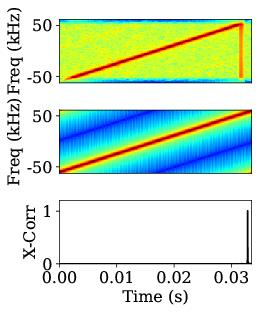
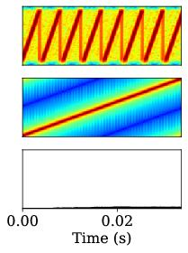
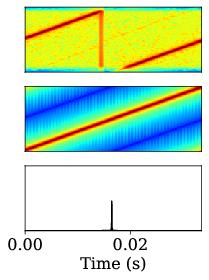
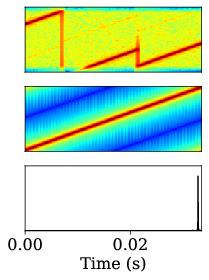

The datasheet of the LoRa radio states that the CAD mode exploits correlation. The implication is that a CAD operation is completed by correlating received samples within a single chirp duration against a locally generated chirp of a specified SF. However, a CAD operation can be initiated by a LoRa radio at an arbitrary point of an incoming LoRa frame; thus, a CAD operation may rarely start at the beginning of an incoming chirp. Hence, correlation will be performed on partially combined two consecutive chirps. Such combinations could be a result of two partial preamble chirps or data chirps. Despite that, CAD should still effectively detect the ongoing presence of a specified SF in a channel if it were to be used as a mechanism for CSMA. At the same time, CAD should also be able to sense the absence of a specific SF even when the channel is occupied by different SFs. For example, a targeted CAD for SF12 on a channel that is occupied with SF9 should not yield a positive result.
CAD on incoming preambles
To present better insights into the CAD operation to the interested reader, the CAD operation of the LoRa radio is illustrated under a few different scenarios below. We present this by performing correlation offline between recorded IQ samples of LoRa chirps and locally generated up chirps. The first case presents performing CAD on preamble parts of two incoming frames: SF12 and SF9. The result of cross-correlation shown in the left figure indicates a clear spike signifying a detection. The correlation result for the second seems close to null, indicating no detection of SF12 within an SF9 frame.


CAD on offset preambles and data chirps
In the second case, a time offset of 2 ms is introduced between the recorded incoming chirps and the locally generated chirp. The first figure corresponds to offset incoming chirps from a preamble and the second corresponds to offset chirps from data symbols. As a result, the locally generated up chirp covers parts of two consecutive incoming chirps. Even with these offsets, the cross-correlation results in clear spikes for both cases.


This analysis thus provides a deeper insight into how a CAD operation works across a variety of real-life scenarios and explains why CAD is a good feature within the LoRa radio that can be used for channel sensing.